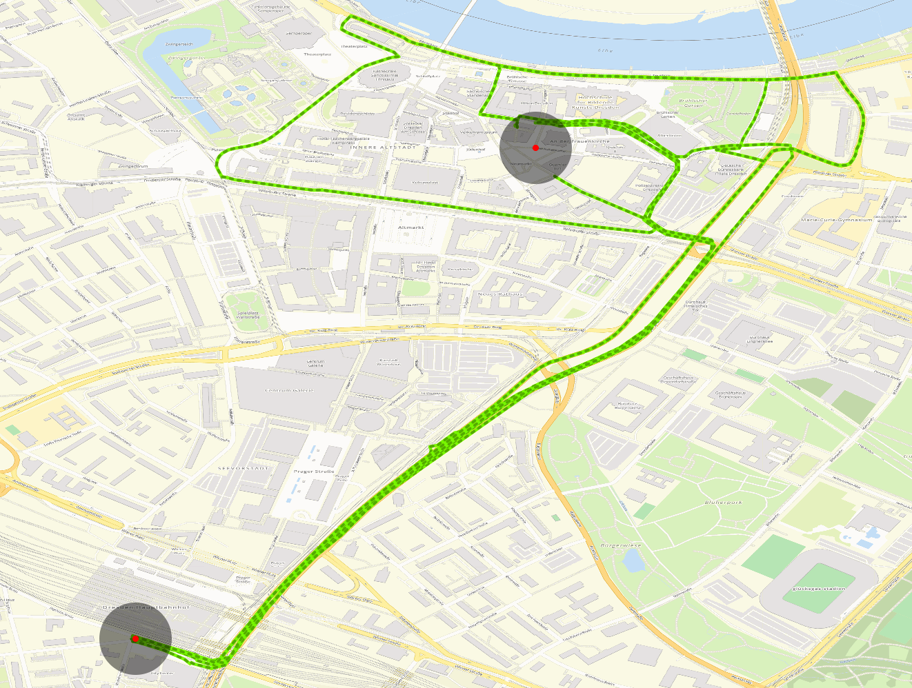

MAGDa - Management und Analyse Geotemporaler Daten
Statistische Analyse und Visualisierung von Floating Car Data (FCD)
Posted am 12.12.2016In diesem Blogeintrag wird das Thema einer Bachelorarbeit mit dem Titel "Statistische Analyse und Visualisierung von Floating Car Data" beleuchtet. Mit Hilfe der Floating Car Data (GPS- und Zeitdaten, die in diesem Fall von Taxis in Dresden generiert wurden) sollten Analysen erstellt werden, die den Einfluss von verschiedenen Faktoren auf den Dresdner Verkehr messen. Die daraus entstandenen Ergebnisse wurden für die Erstellung eines Routingalgorithmus verwendet, der basierend auf den historischen Daten die vermeintlich beste Route finden soll.
Als Einflussfaktoren wurden die Uhrzeit, der Wochentag, die Ferienzeiten, die Temperatur und der Niederschlag als vermutlich wichtigste Umstände ausgewählt. Die Faktoren wurden auf ihre Relevanz untersucht, indem ein Java-Programm Berechnungen auf den unterschiedlichen Taxifahrten durchführte und folgende Visualisierungen erstellte. Dabei sind alle Visualisierungen so aufgebaut, dass die rechte/türkise Y-Achse immer die mediane Geschwindigkeit, die linke/orange Y-Achse die Menge der verfügbaren Fahrten und die X-Achse die Einteilung des jeweiligen Einflussfaktors darstellt.
Die Visualisierung der Tageszeit im Stundentakt zeigt, dass nachts, also von 00:00 bis circa 7:00, die mediane Geschwindigkeit überdurchschnittlich hoch ist. Von 8:00 bis 12:00 ist die Anzahl an Taxifahrten erhöht, während die Geschwindigkeit stark absinkt. Am Nachmittag nimmt die Fahrtenmenge mit steigender Uhrzeit immer weiter ab. Die Geschwindigkeit pendelt sich dagegen verhältnismäßig stabil ein. Es gibt nur noch zwischen 22:00 und 23:00 eine Spitze von beiden Parametern.
Bei den Wochentagen ist die Menge der Fahrten zum Wochenende hin stetig steigend, mit einem Höhepunkt am Freitag und einer Absenkung auf dem Minimallevel von Samstag zu Sonntag. Die Geschwindigkeit bleibt von Montag bis Freitag relativ konstant und wird nur am Samstag und Sonntag spürbar erhöht.
Bei dem Ferienzeitendiagramm ist die Menge an Fahrten pro Tag angegeben, da die Zeiträume sehr stark variieren. Die Fahrtmenge ist am Anfang des Jahres sehr stabil und macht einen großen Sprung ab dem Ende der Sommerferien auf ungefähr der doppelten Menge und bleibt dort konstant bis zum Ende des Jahres. Unabhängig davon ist die Geschwindigkeit über alle Zeiträume verhältnismäßig stabil.
In der Temperaturvisualisierung ist zu beachten, dass die Fahrtmengenskala logarithmisch ist, da es nur relativ wenige Fahrten mit Temperaturen unter -10°C und höher als +30°C in dem Datensatz gibt. Die Geschwindigkeit ist bei sehr niedrigen Temperaturen höher als bei den Restlichen und sinkt im Bereich von 0°C bis 30°C immer weiter ab.
Auch beim Niederschlag ist die Fahrtmengenskala logarithmisch, da es sehr viele Fahrten ohne Niederschlag gibt. Demgegenüber gibt es nur wenige Routen mit Niederschlag im Datenbestand. Die mediane Geschwindigkeit verhält sich dabei so, dass sie mit steigender Niederschlagsmenge immer weiter abnimmt, mit Ausnahme der 8.1 – 12mm-Niederschlagskategorie, bei der sie leicht steigt.
Nach diesen Analysen wurden Wichtungen für die einzelnen Faktoren errechnet, indem die maximale Differenz der jeweiligen X-Achsen-Werte verglichen wurde. Die Ferien wurden dabei nicht beachtet, da der Einfluss auf die Geschwindigkeit nur sehr gering, beziehungsweise nicht existent, zu sein scheint.
| Tageszeit | Wochentag | Temperatur | Niederschlag | |
| Differenz | 13,35 km/h | 5,59 km/h | 7,98 km/h | 5,42 km/h |
| Wichtung | 41,3 % | 17,3 % | 24,7 % | 16,7 % |
Nun wurde der eigentliche Routingalgorithmus in PostgreSQL umgesetzt. Dabei sind die zuvor ermittelten Wichtungen für die Reihenfolge der modularen Filter entscheidend. Je höher der Wichtungswert, desto früher wird er angewendet, um möglichst viele Fahrten für die wichtigsten Filter bereitzustellen.
Zusätzlich wurde ein finaler Filter eingebaut, der sicherstellen soll, dass Fahrten mit überdurchschnittlichen hohen Zeiten oder langen Strecken aus dem Ergebnis entfernt werden. Dieser Filter erreicht dies durch eine Analyse der Durchschnittsgeschwindigkeit oder auch indem er Zeit und Distanz einzeln mit anderen Fahrten vergleicht. Diese beiden Varianten sind als unterschiedliche Modi im Filter definiert.
Nachfolgend ein Beispiel für eine Routingabfrage vom Dresdner Hauptbahnhof zur Innenstadt. Als erstes wurde die Filterreihe ohne abschließenden Durchschnittfilter aufgerufen, um ein besseren Vergleich zu haben.
Als Ergebnis gab es 7 verschiedene Fahrten mit Distanzen von 2,2 - 4,6km und Fahrtzeiten von 6 - 24min. Es gab bei keiner Route Regen und die Temperatur liegt bei 7,5 - 20°C. Bei allen Fahrten wurden sämtliche Filter angewendet, weil die Spalte filter_relevance überall bei 100% liegt.
Die nächste Abfrage erfolgte mit dem Durchschnittsfilter im Modus der Geschwindigkeitsfilterung.
Von den 7 Fahrten sind noch 3 übriggeblieben. Die kürzesten Strecken sind nicht mehr dabei, weshalb die Distanzen jetzt von 3 - 4,6km reichen und die Fahrtdauer 6 - 10min beträgt. Das kommt daher, dass die längeren Fahrten in diesem Fall immer höhere Durchschnittsgeschwindigkeiten als die kürzeren hatten.
Die letzte Abfrage wurde jetzt der Durchschnittsfilter auf das Vergleichen der einzelnen Werte angepasst.
Diesmal sind von den 7 Fahrten nur zwei geblieben. Diese beiden Fahrten ähneln sich stark im jeweiligen Streckenverlauf, deshalb ist die Distanz bis auf wenige Meter gleich. Die Fahrtdauer weicht auch nur um 2min voneinander ab.
Abschließend ist noch anzumerken, dass die Aussagekraft der Ergebnisse eingeschränkt ist, da die Daten ausschließlich von Taxis erzeugt wurden und nicht zwangsläufig auf den allgemeinen Straßenverkehr übertragbar sind. Andererseits sind die Daten nur in Dresden und Umgebung aufgenommen worden und die Wichtungen an anderen Orten könnten verschieden sein. Eine weitere wichtige Einschränkung ist die Tatsache, dass nur eine begrenzte Anzahl an Einflussfaktoren untersucht wurde. Es gibt weitere nicht mit einbezogene Faktoren, wie besondere Events in der Stadt Dresden. Dazu zählen beispielsweise der Semperopernball und der Dresdner Striezelmarkt. Alles in allem kann der Routingalgorithmus eine zwar begründete Aussage treffen, aber er ist nicht in der Lage mit Sicherheit die effizienteste Route zu finden.